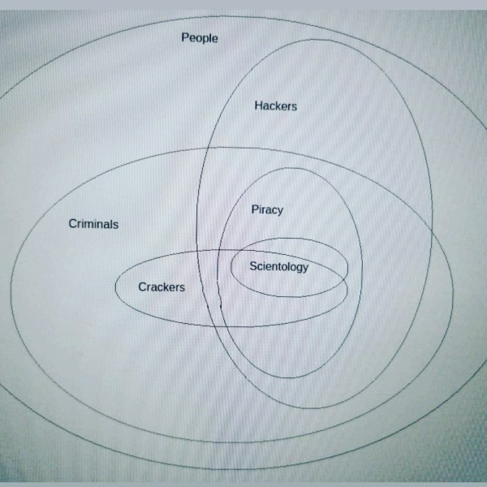

This post is part
Саєнтологія або Юсмалос пострадянського простору – це американсько-радянський тоталітарний деструктивний культ, створений з андроповсько-беріївським менталітетом комуністів і технократів. Головний торговець людьми. В деяких партійних документах СРСР вони повинні - для СРСР - вони повинні знищити США зсередини, а для США вони повинні знищити СРСР зсередини і бла-бла, на практиці це групи, які проводять експерименти над людьми і їх нервової системи, але для військової вигоди. Це схоже на рабів для військових, які можуть розуміти та «чути» радіограми ЕЕГ іноземних громадян. У мережі UA/RU можна знайти сюжети про Чорнобильський центр «Психотроніки» — батьківщину радянської частини проектів «Юсмалос», «Саєнтологія», «Дуга» та подібних, системи управління «Краб» і «Змія». В теорії..
Не підтверджені слухи про деяку частину коммуністичної партії Радянського союзу:
«На основі досліджень, проведених у 1972-1973 роках, в Інституті радіоелектроніки АН СРСР завершено виготовлення і впровадження у військову практику новітнього радіотехнічного озброєння. Штучне створення раси рабів із заданими властивостями». практично стала реальною. У військово-промисловому комплексі існує класифікація, де сьоме, новітнє покоління зброї масового ураження називається зброєю, що впливає на генетичний апарат». - і вся саєнтологія дивиться на вас як на біоробота чи раба.
Ради союзу - створили єлектромагнітну зброю массового ураження вбудовану в цивільну інфраструктуру, накачали наркотиками весь захід, підтримали існування Cаєнтологїї та Аум Сінрікьо, запровадили програми нових людей де роботами мала бути би раса рабів - як в ідеї коммунізму де люди всі співають та малюють а на заводах працюють роботи. Населення ж країн проступово потрапляє в рабство по рішенню партії після розвалу причиною якого була поразка в холодній війні та все більш масове використання контролю населення. ( IMHO )
Через те у кожного різні типи волі від схем керування до схем нездатності до насилля та ці нейромережі можуть змінювати на протязі життя. Сигнал забирають по винайденому 1922 способі радіочастотного зчитування активності мозку. ( IMHO )
Історичні згадки про Коммуністичні психологічні операції з історії:
Навіщо їм комуністи в релігійних культах чи релігійний опіум для людей: Культурний марксизм був не просто філософською теорією, він став планом комуністичної диверсії під час холодної війни. За словами чеського перебіжчика генерал-майора Яна Сейни, Брежнєв (Генеральний секретар 1964–82) створив «довгостроковий стратегічний план» для перемоги над Заходом шляхом політичної війни та деморалізації. План мав чотири етапи: (1) «мирне співіснування», (2) «боротьба за мирне співіснування», (3) «період динамічних соціальних змін» і (4) «ера глобального демократичного миру», яка мала настати у 1995 році (Sejna, 1982: 106). Метою другої фази було «прискорити соціальну фрагментацію капіталістичних країн» (Sejna, 1982: 106). Але, на час з 1991 по 2024, залишки радянської влади та спадкоємці просто торгують людьми. це інколи називають "радянським товаром" наряду з нейрологічним масовим ураженням та наркотеррором - "дружба".
Військова нейронаука та наступаюча ера нейровійни, 2016 Армін Крішнан, 262–263, 260–262.
Військова нейронаука та майбутня ера нейровійни, 2016 Армін Крішнан, 265–266.:
Процес деморалізації в США в основному завершено вже за останні 25 років. Насправді план перевиконано, тому що деморалізація зараз досягає таких областей, де навіть тов. Андропов і всі його експерти навіть мріяти не можуть про такий приголомшливий успіх. Більша частина робиться американцями для американців завдяки відсутності моралі та стандартів. Як я вже згадував раніше, доступ до правдивої інформації більше не має значення. Людина, яка була деморалізована, є не в змозі оцінити правдиву інформацію. Факти нічого не говорять до нього, навіть якщо я обсипаю його інформацією, достовірними доказами, з документами та картинками. ...він відмовиться повірте... У цьому й трагізм ситуації деморалізації.
Правда, коли почалося справжнє тотальне лайно з контролем всього населення країн мафією, залишки влади намагалися розв'язати війну за порядок, фактично армія та спецслужби мали право вбивати на місці
Закон СРСР від 1 серпня 1990 року
No v1552400-90 «Про пресу та інші засоби масової
інформації» став першою спробою закріпити
права на свободу думки і слова у профільному
нормативно-правовому акті. У ст. 5 (неприпу-
стимість зловживання свободою слова)
задеклароване положення щодо недопустимості
використання засобів масової інформації для
розголошення відомостей, які становлять державну
чи іншу таємницю, що спеціально охороняється
законом, заклику до насильницького повалення або
зміни державного та суспільного ладу, пропаганда
війни, насильства й жорстокості, расової,
національної, релігійної винятковості або нетер-
пимості, розповсюдження порнографії з метою
вчинення інших кримінально караних діянь.
Забороняється й переслідується відповідно до
закону використання засобів масової інформації
для втручання в особисте життя громадян,
посягання на їхню честь і гідність ("Zakon
SRSR", 1990).
Послідовник Аум Сінрікьо виступає посередником у таборі секти біля гори Фудзі в 1995 році, одягаючи гарнітуру, яка повинна випромінювати мозкові хвилі лідера Шоко Асахари. Джерело: https://asia.nikkei.com/Politics/Executions-can-t-erase-Japanese-death-cult-s-dark-legacy

Де вони це беруть:
Інший лідер культу, Фуміхіро Джойю, якому зараз 35 років, був яскравим молодим інженером з японської космічної програми, спеціалізується на штучному інтелекті. Він це залишив для того щоб піти на роботу до Аум, де він дуже швидко піднявся по кар'єрній службі, щоб зрештою очолити операції культу в Росії. Джою наглядав за цим важливим розширенням культу, серед іншого «вклавши» аж 12 мільйонів доларів у вигляді виплат високопосадовцям. Інвестиції культу окупилися завдяки швидкому доступу до адміністративних будівель, гуртожитків та інших приміщень по всій Росії. Під час атаки в токійському метро основним підприємством культу в Росії був московсько-японський Університет зі штаб-квартирою в офісах навпроти балету Великого театру. Їхній старший російський партнер в університеті був чоловік на ім'я Олег Лобов, на той час також голова Ради національної безпеки Росії і близька довірена особа Бориса Єльцина.
Ця організація була розпущена, починаючи з 1995 року, спецслужбами різних країн. Частина з них йде до саєнтологічних та інших злочинних угруповань, частина починає нове життя, а частина, також, у ці дні живе в Росії і має назву «Алеф» - можливо тому, що Росія також розробляє зброю спрямованої енергії військового рівня?, за підтримки української армії в минулому, ~1990-2000, та єкспериментами на українському народі. .. Саєнтологія використовує ті самі методи, що й Аум, для створення нових членів і поєднує це зі своєю старою методологією промивання мізків, за іншою думкою, вони використовують DEW набагато раніше, ніж Аум. Так як Сьо Асахара привчав мене до контролю ним та спільниками в дитинстві хоча тоді мене ще рятували безпартійні залишки червоної армії, як від них так і від саєнтології, тоді мало хто знав що ця мафія то культ та чим вони користуються і як їм протидіяти, їх за те вбивали і на данний час більшість з них на кладовищі з своїх 30 років, через це і терракти в метро та Токіо я підтримував кару Асахари через смерть але через те його вірні піддані можливо хочуть мене вбити.
Кожна людина з моменту отримання комп'ютера дізнається в Інтернеті, що піратство - це райське заняття і веде до в'язниці або однієї з форм сучасного рабства. Для цього великі інтернет-компанії формують особливий спосіб видачі початкової інформації і ніколи не пропонують людині доступ до піратських ресурсів, поки вона сама своїми діями не навчить цьому алгоритми. Це один із механізмів безпеки людини, який сформувався роками боротьби з кіберзлочинцями, але в деяких регіонах зламаний через регулювання з боку номенклатурного класу. Саєнтологічні, злочинні та піратські групи, які використовують людей для доступу до конфіденційної інформації або для роботи та інших форм рабства:
Усі вони є частиною груп, які використовують дезінформацію в суспільстві та створюють масову думку про "психозброю" в ноутбуках, смартфонах та інших цивільних пристроях, усіх пристроях із наших магазинів, метальному та біологічному дистанційному керуванні з США (з білого дому) звідусіль, але насправді іноді зломщики може переписати прошивку спеціально для вас. Отримавши контроль над однією людиною або групами людей, вони створюють для них новий «світ», але я вважаю, що це не що інше, як торгівля людьми:

By @davedanzara
У ситуації торгівлі людьми порушуються такі основні права:
заборона або обмеження свободи пересування - порушує право особи на свободу та безпеку особи та свободу пересування;
жорстоке та таке, що принижує гідність, поводження - багато форм торгівлі людьми, як правило, включають фізичне, сексуальне та психічне насильство, що є фактом жорстокого та такого, що принижує гідність, поводження;
заборона або обмеження права на свободу слова, доступ до інформації та асоціації – багатьом жертвам торгівлі людьми відмовляють у цих правах у рамках механізмів примусового контролю, за допомогою яких торговці людьми їх експлуатують;
відмова або обмеження права на приватне чи сімейне життя – у багатьох випадках жертв примусово або шахрайським шляхом забирають із сімей і позбавляють бажання мати приватне життя та сім’ю;
Відмова або обмеження права на гідний рівень життя, включаючи достатнє харчування, одяг і житло – у багатьох випадках, особливо в різних формах трудової експлуатації, жертвам постійно відмовляють у належному рівні їжі або житла і часто тримають у важких та небезпечних умовах життя;
відмова або обмеження права на стандарти охорони здоров'я - переважна більшість жертв експлуатації мають загрозу життю, наприклад, надання сексуальних послуг без належного захисту або робота на небезпечних шахтах, фабриках тощо, і, окрім того, їм відмовляють у доступі до медичних закладів, що призводить до великої кількості серйозних травм і захворювань, які вони зазнають у результаті прямої експлуатації як жертви торгівлі людьми;
примусове втягнення у злочинну діяльність;
обмеження права на освіту - багато дітей і підлітків, які постраждали від торгівлі людьми, розлучаються зі своїми сім'ями і не мають доступу до будь-якої форми освіти.
У моєму випадку вся чорна саєнтологічна мафія використовує поліцію (в Україні вони не можуть використовувати електромагнітну зброю)/інтерпол/військові методи доступу, як-от доступ до МЕНЕ через радіо, і якщо я намагаюся знайти або дізнатися щось про це, вони просто wipe me як SSD на ноутбуках, ноутбук також отримує разом зі мною та це приводить до цікавих та більш плачевних результатів. Зараз я відчуваю свою свідомість в абсолютній порожнечі без думок і бажань, 2 роки кожен день без внутрішніх діалогів, все це сталося після електромагнітного спалювання, описаного в ще одній статті. Жити без фантазії і з пошкодженою пам'яттю дуже проблематично, але рятує комп'ютер і Інтернет - це протези. Але зараз успішні випадки маніпуляцій і промивання трапляються рідше. Але в Миргороді у нас є кілька спільнот, які мають доступ до цих знань. Можливо, мені не знадобляться живі навички, тому що я просто народився для цього ринку з саєнтологічними експериментами. В Саєнтології в Україні це єдина вірна правда. Коли у вас проблеми/війна з саєнтологічною поліцією та мафією, країна не важлива, вони просто намагаються створити біоробота з вас. В Україні онлайн-піратство, ресурси та деякі творці контенту створюють підстави для використання промивання мізків проти людей, не знаючи, що вони можуть зробити для власної безпеки. І після багатьох років використання піратського вмісту наші майстри піратства дають вам вибір – ви повинні почати працювати з ними, створювати торренти чи інші правопорушення, або ви можете потрапити в пастку сучасного рабства. Також десь 2006 року в Україні замовчують багато які випадки торговлі людьми, наприклад про те що мене забрали в рабство ще в школі Миргороду перестали дозволяти розказувати десь в 2008 - лоббі рабовласників достатньо сильне та складається переважно з поліцейського апарату та влади, тому читати книжки та вчитись для дочки мента та бути їй придатком це наче як нова Українська норма. А в 2016 мені продемострували досягнення в контролі жертв радіо гіпнозом - змусили поставити підпис в релігійному документі змісту якого я не знаю та все що мені там вдалося зрозуміти це те що треба вписати вигаданий ID. Все настільки погано, що навіть голова Нацради з питань телебачення і радіомовлення (Україна) пірат (2017). Через неймовірно величезний рівень піратства Україна виплачувала репарації, 75 мільйонів доларів щороку, а ті, на кого повісили собак, є найбільш незахищеним класом і для них наші спецслужби, інколи, можуть просто почекати та отримати нові цікаві знання. А зайнявши одне з перших місць у рейтингах країн з найвищим рівнем піратства, ми не можемо купити нормальні ноутбуки, компьютери чи телефони в місцевих українських магазинах. У результаті вони можуть почати використовувати кіберзлочини для контролю ваших запитів до поліції та інших правоохоронних органів. Тотальне стеження дозволяє їм надавати своїм адвокатам дані до того, як вони потраплять до держави, а іноді змінювати їх за власним бажанням. У цій країні такі люди, як Грибанова (Нарконон) і Конев (ОСА, ІМХО), починають працювати з армією і дітьми в школах, як я знаю, з 1995 чи 1996 року і створюють в країні щось на зразок лобі для іх сфери інтересу, і вони завжди кажуть: ви можете завантажити або почати дивитися будь-який контент в Інтернеті, крім їхнього, вони дізнаються, що люди скоюють злочини, і видають це як прості некримінальні дії або ідеологічну війну, для особливо запущенних людей. Миргородські, київські та харківські члени культу з Sea Org - мафія, Narconon - соціальні працівники - можуть домовитися з низкою місцевих та інших виробників про додавання в сигарети чи напої наркотиків, від яких ви блюватимете кров'ю, в поєднанні з іншою їжею або ліками - наприклад, я живу на таблетках. Criminon - поліція та прокуратура та може використовувати низку наркотиків та OSA - армія, уряд та СБУ, Netforce - нова саєнтологічна організація для кібертерору та розвідки в Інтернеті, наприклад Netforce Ukraine - вони можуть працювати в SS7 або новішому аналогу цього типу системи урядового зв'язку. Ця схема - моя думка. Також про то як вони бачать безумовний дохід - це рабство для частини населення - піратство в уряді та рабство, де ви повинні бути піратом та віддавати їм частину грошей або повинні віддавати їм частину грошей частину вашої справи і бути під дистанційним контролем - вони порушують основні права людини, обмежуючи доступ до інформації, позбавляючи волі, недоторканність приватного життя, рівноправність громадян і порушують право на життя, свободу зібрань і асоціацій, а також репресують тих, хто виступає проти рабства. І зараз багато людей, захоплених піратами або саєнтологами - вони крадуть схеми та код мікропрограм у компаній-виробників, щоб спалити або видалити системи та компоненти захисту людини від комп'ютерного високочастотного випромінювання, кібератак - і намагаються промити мізки, створити нервові імпульси ( Радіо-частотна індукція ) і створюють фосфени для всіх своїх жертв, і після цього вони (жертви) не можуть самостійно мислити та приймати правильні рішення через те, що атаки фізично пошкоджують їхній мозок - фізика працює незалежно від поглядів, бажань чи переконань. Біле братсво це пропаганда бандитьського підходу до життя де відсидіти у вʼязниці та вірити в бога, рух Ауф та подібне лайно, є саме тим для чого ти народився а саентологи з поліцією та іншими частинами лоббі рабовласників дарують їм штучного бога що є проявом контролю спецзасобами та контролем розуму для зменшення кількості проблем, Свідки Ієгови як визнана настрашніша секта світу просто наймиліші люди в порівнянні з вище вказаними.
Записують дітей 1-2 років в не існуючу червону армію, злочинці, коммуністи обманом, фальшивими документами та використовуючи шифр зі звичайних слів яким змінюють значення, починають перетворювати дитину в раба або готувати з неї співучасника правопорушеннь.
Саєнтологи, Пірати, Рабовласники на час війни в Україні знайшли новий спосіб утилізації рабів, що стали не зручними або не вигідними, раби це про тих кого вже настільки довго тримали з пошкодженими або постійно тримають з пошкодженими внутрішніми органами ЦНС, що вони вже не розуміють що ними керують або вже не мають жодних варіантів порятунку бо населенню не має діла до дотримання їх прав та законів та воно раде тому що в сусіда пожежа, також часто раб ніколи не знає про величезний пласт технологій радіочастотного контролю, стимуляції, перешкоджання життедіяльності та те що електромагнітні хвилі труять організм. Рабів маніпуляціями оформлюють в добровольчі батальйони де є командири що отримували плату від мафії та винні їй послуги і людину радіо контролем, в перших боях або при нагоді, виводять під вогонь противника.
Найкращою тактикою цієї та подібних груп є використання «технології інтерфейсу «мозок-мозок» для передачі або отримання електромагнітного представлення волевиявлення, вони називають цю дію - придушення пригнічувальних особистостей, де злочинці самі по собі є тим, що вони знищують відповідно до своєї «віри»., внаслідок чого люди, що перебувають під придушенням, можуть спробувати піти з життя шляхом самогубства - в процесі «придушення». жертви вбивства можуть набути прагнення до саморуйнівної поведінки, яке викликане електромагнітними кайданами, а самогубство є остаточним опором їм. Або після років життя в культі/групі/комуні мати «Стокгольмський синдром» і почати допомагати й захищати інших членів культів і мучителів. Крім того, культи продають права на рішення про використання подібних технологій терористами під виглядом магічних здібностей, які відображають новий рівень ініціації.
Rondroinds
Одним із явищ, спільних для багатьох культів, є зміна особистості члена культу після навернення. Це стало страшним досвідом для багатьох сімей. Іноді зміни відбуваються поступово, а в інших випадках це відбувається в рамках одного досвіду, який називається «захоплення» однією командою дослідників. (23) Культова особистість радикально відрізняється від докультової особистості.
Є докази того, що ця зміна є як органічною, так і психологічною. Піддаючи людину радикальній зміні навколишнього середовища та надлишку нової та радикально іншої інформації, що насправді може спричинити зміну нейромедіаторів у мозку. Речовини норадреналін і серотонін в мозку мають подібний хімічний склад, як мескалін або ЛСД. Коли сенсорний потік у мозок сильно обмежується або раптово перевантажується, це може викликати стан підвищеної сугестивності або симптоми дисоціації чи галюцинацій.
У саєнтології це може статися під час гіпнотичної практики TR-0 або протягом довгих годин на курсах саєнтології.
Психіатр доктор Джон Кларк з Гарвардського університету вважає, що культи, в тому числі саєнтологічні, є психологічно небезпечними:
У культах люди стикаються зі стресовими обставинами, особливо з великою кількістю нової інформації в періоди свого життя, коли вони вразливі, і вони відділяються. Що, на біса... Саєнтологи та всі інші небезпечні культи роблять, це підтримують дисоціацію. Вони зберігають частини розуму — зв’язки всередині центральної нервової системи — розділеними за функціями, діями та зв’язком із зовнішнім світом. Це спосіб контролювати їх, і чим довше це триває, тим далі все це стає одне від одного - як хронічна шизофренія. (24) ( в мене це є як постійне озвучення процессу мислення для утримання думки та продовження заняття яке я роблю, також це дозволяє обманути мене за допомогою голосових маніпуляцій шляхом радіочастотної атаки та викликаного нею звукового чи іншого гіпнозу, в випадку компʼютеру з акустичною системою. та для мікрофону... примітка перекладача )
Чи Хаббард справді вірив у саєнтологію, чи він був просто розрахованим шахраєм?
Естабрукс описує того, кого він називає «щирим диктатором»:
Диктатор може бути, як правило, людиною великої особистої мужності. Він похмуро грає до останнього кидка кубика і зустрічає свою долю з піднятим підборіддям. Це може бути тому, що він абсолютно щирий. Це звучить як дивне протиріччя, але ми повинні це прийняти. Диктатор справді вірить, що він є інструментом, обраним Богом – або інструментом, обраним суспільством, якщо він не вірить у Бога – щоб вести свою групу чи, можливо, весь світ, у землю обітовану. Отримана картина неприємна, і людина, яка створює цю картину, є найнебезпечнішою з усіх психічно дезадаптованих. Він володіє розумом, переконанням, драйвом, сміливістю та буде абсолютно безпринципним — поєднання, яке викликає серйозне занепокоєння. (25)
Ті, хто його знав, погодяться, що це справедливий опис Хаббарда.
Один важливий ключ до мотивації Хаббарда лежить у книзі, яку він написав у середині 1950-х років під назвою «Посібник з промивання мізків». Хоча були свідки, що Хаббард написав цю книгу, він приписував авторство сумно відомому російському політику Берії, а потім зробив вигляд, що «відкрив» її.
Деякі уривки з цієї книги багато розкривають про Хаббарда:
Для держави (саєнтології) недостатньо мати цілі.
Ці цілі, коли вони висунуті, залежать від лояльності та слухняності працівників (саєнтологів). У тих, хто здебільшого займається важкою працею, залишається мало часу на пусті спекуляції, що добре...
Гіпноз викликається гострим страхом.... Віра породжується певною часткою страху та жаху з авторитетного рівня, і за цим слідує покора.
Тіло менш здатне чинити опір подразнику, якщо йому недостатньо їжі і воно втомлене.... Відмова давати їм спати протягом багатьох днів, відмовляючи їм у достатньому харчуванні, тоді створюється оптимальний стан для отримання стимулу. ( Це пояснює слова багатьох саентологів про шкоду нормального рівня вітамінів, легких форм гіпервітамінозу та відношення до нормальних рівней солей в крові жертв. примітка перекладача )
Деградація і завоювання є супутниками.
Знижуючи витривалість людини... і постійним приниженням і наклепом, можна таким чином викликати стан шоку, який буде адекватно сприймати будь-який наказ.
Будь-яка організація, яка має дух і мужність демонструвати нелюдяність, жорстокість, силу... (жертва. примітка перекладача) буде підкорятися. Таке застосування сили саме по собі є істотною складовою величі.
і:
Перебудовуючи лояльність, ми повинні контролювати їхні цінності. У тварини на першому місці вірність самому собі. Це руйнується демонстрацією помилок у ньому ... друга вірність - це його сім'я ... Це руйнується зменшенням цінності шлюбу, полегшенням розлучення та вихованням дітей, коли це можливо, державою. Наступна лояльність – до друзів і місцевого оточення. Це руйнується зниженням його довіри та донесенням на нього нібито його товаришів або міської чи сільської влади. Наступна лояльність – це держава (Саєнтологічна церква), і це, з точки зору комунізму (Саєнтології), єдина лояльність, яка повинна існувати.
І, нарешті:
Догмати жорсткого індивідуалізму, особистого детермінізму, свавілля, уяви та особистої творчості однакові в масах, які антипатично ставляться до блага Великої Держави (Саєнтології). Ці свавільні та неприязні — це не більше ніж хвороби, які призведуть до незадоволення, роз’єднаності та, зрештою, розпаду групи, до якої прив’язана особа.
Людська конституція легко й повністю піддається певному й позитивному регулюванню ззовні всіх її функцій, у тому числі мислення, слухняності та відданості, і ці речі необхідно контролювати, якщо хочеться створити Велику державу (саєнтологію).
Мета повністю виправдовує засоби. (26)
Чи знав Хаббард, що робив?
Відповідь - так. Керований жадібністю, своєю подвійною жадобою грошей і влади, він навмисно і свідомо знищив життя тисяч людей, достатньо наївних, щоб піти за ним. Л. Рон Хаббард - сопілкар душі...
Source Brainwashing and Thought Control in Scientology -- The Road to Rondroid
Від себе - при перебуванні у полоні та під маніпуляціями, я вірю тільки в визначення що надаю далі, тоталітарно-деструктивного культу торговців людьми "церква Саєнтології", та їх інші публічні назви що почерпнуті з іх ідеології та псевдонауки-псевдорелігії, чув від іх старого члена що типу захищав людство від наркотиків про те що я не "воспроизвожу", як я зрозумів вони єксперементують пишучи радіочастотні відповіді від просвічування мозку й тіла радіохвилями а потім перевіряють чи відтворюються вони на тій же людині через час, якщо ні чи якщо бажають більшого керування рабом вони опромінюють 24/7 відповідями записаними з себе, з будь якою кількістю учасників.
Теорія нейромереж між людьми по принципцу розумних систем типу РОЙ - саєнтологічне рабовласництво часто виправдано арміями чи сильними групами суспільства через те що після створення перших пристроїв типу як в патенті 1975 року з'явилась можливість створювати між групами злочинців, чи людей, спеціальні мережі по обміну данними мозок-мозок чи тіло-тіло та таким чином достатньо таємно та контрольовано, бо знання можливо забрати чи знищити в будь який момент, розробляти ПО для взлому, зброю, операції і так далі. Після використання на людах описаного патентом пристрою та контрольованого вирощювання мозку ці люди абсолютно позбавлені свободи та прав і переважно не здатні думати без єлектромагнітної стимуляції або не мають єволюційно необхідного єлементу для винекнення думок - наприклад бажаннь чи власного я.
Про саєнтологічний "Нарконон" та інші "освітні" програми:
У результаті досліджень було встановлено, що самі лекції і те, як вони проводяться, порушують фундаментальні європейські біоетичні принципи інформованої згоди та презумпції вини (до корисності та безпеки медичних чи психологічних технологія перевірена, вважається шкідливою та небезпечною). Крім того, на думку вчених, лекції Нарконону мають психоманіпулятивний характер і містять псевдонаукові концепції. Експерти дійшли висновку, що програма є першим кроком у цьому процесі залучення молоді до саєнтологічної секти. "По суті, це біомедичний експеримент, не санкціонований суспільством"
Про «Саєнтологічні методи»/Саєнтологія в Українcькій Армії, СБУ та міліція – використовують саєнтологічну мафію та DEW за гроші та торгівлю людьми:
- Може створити вірну «дружину» шляхом промивання мізків і насильства
- Може навчити когось, як використовувати DEW або створювати/писати мізки людей у прямому ефірі - за гроші та для кар'єри
- Може вбити вас, тому що ви не хочете бути для них піратом
- Використовуйте людей як пристрої в парі з комп’ютерами для розвідки та піратства
- Можна продати вас на сторону, як пристрій або як секс-іграшку
- Вони починають готувати вас до цього з дитинства, і якщо ви хочете чогось близького до нормального життя, ви повинні зрадити своїх друзів і навчитися "зламувати" комп'ютери та мізки на них
- Щоденне спостереження - це може зламати вашу психіку
- Наркотерор, щоб ви не ходили в поліцію і за допомогою електромагнітної зброї створювали для вас принизливі та відразливі ситуації
- Щоденне психологічне насильство для зміни балансу нейромедіаторів
Соціальний статус рабства або будь який інший соціальний статус що відміняє те що ви людина соціально обумовленні явища задля виправдання організованих правопорушеннь, массових вбивств і т.д. - єдина існуюча форма фізичного рабства людини це абсолютна залежність від законів природи та характеристик фізичного простору.
Завжди використовують CDA/PCA/Security device без відповідних правових актів - незаконно - без рішення державного суду та повідомлення про це.
Про саєнтологію та супутню «медичну» діяльність:
Вони можуть спробувати застосувати TMS (транскраніальну магнітну стимуляцію) і rTMS (повторювану транскраніальну магнітну стимуляцію), надзвичайно низькочастотну та високочастотну транскраніальну стимуляцію постійним струмом (tDCS) проти «пацієнтів», які мають нікотинову, алкогольну або наркотичну залежність, а також проти людей. з раком або іншою формою захворювання мозку або нервової системи, деякі люди померли від цих дій у минулому - я знаю про 2 жінок в Україні, і у нас є про більше померлих в Україні та інших країнах. Вони використовують BBI (опромінюють вас сигналом, записаним з їхньої життєдіяльності) та TMS, rTMS у вашому домі без сертифікації, належного обладнання та без вашого дозволу. І в процесі намагаються контролювати вас або створюють вашу «тінь», яка щодня знає, що ви думаєте або робите.
Саєнтологія в Україні, новини та суд
Відмова в реєстрації статуту релігійної громади «ЦЕРКВА САЄНТОЛОГІЇ КИЇВ» Печерського району Києва міститься в розпорядженні КМДА від 15.08.2014 No 905, текст якого має КВ. «Відповідно до статей 14, 15 Закону України “Про свободу совісті та релігійні організації”, маючи розглянула звернення громадян від 20 травня 2014 року та протокол загальних зборів віруючих громадян с релігійна громада «ЦЕРКВА САЄНТОЛОГІЇ КИЇВ» на Печерському р-ну м. Києва від 12 травня 2014 року No 1, в рамках функцій місцевого органу виконавчої влади: Відмовити в реєстрації статуту релігійної громади «ЦЕРКВА САЄНТОЛОГІЇ КИЇВ» в Печерському районі Києва у зв’язку з тим, що положення зазначеного Статуту не відповідають вимогам статей 5, 9, 12 Закону України «Про свободу совісті та релігійні організації» йдеться в документі.
Супутнє право в Україні:
- Стаття 163. Порушення таємниці листування, телефонних розмов, телеграфної чи іншої кореспонденції, що передається засобами зв'язку або через комп'ютер
- Стаття 182. Порушення недоторканності приватного життя
- Стаття 161. Порушення рівноправності громадян залежно від їх расової, національної, регіональної належності, релігійних переконань, інвалідності та за іншими ознаками
- Стаття 149. Торгівля людьми
- Стаття 147. Захоплення заручників
- Стаття 146. Незаконне позбавлення волі або викрадення людини
- Стаття 142. Незаконне проведення дослідів на людях
- Стаття 138. Незаконна медична діяльність
- Стаття 127. Катування
- Стаття 363 Втручання в роботу електронно-обчислювальних машин (комп'ютерів), автоматизованих систем, комп'ютерних мереж або мереж електрозв'язку шляхом масового розповсюдження повідомлень електрозв'язку
- Заборона онлайн або комп'ютерного піратства - Закон України "Про державну підтримку кінематографії в Україні" (1601-VIII) 23.03.2017 - набув чинності 26.04.2017; Закон України про інформацію
# перевага гвалтівника
Мій висновок:
Піратство та саєнтологія, поки війна в Україні, атакують людей і намагаються взяти в сучасне рабство, ми можемо бачити ці дії з боку Росії за підтримки українського піратства та злочинних угруповань - тоді як російські сили контролюють, імхо також електромагнітно, але, можливо, це лише маскування інших злочинних сил, оскільки росіяни знищують телекомунікації, що загалом правильно, але це також створює питання, населення, а іноді й частина українських сил, саєнтологія, пірати та злочинці в уряді використовують війну для свого збагачення та пошуку нових "аватарів" і знищення старих ворогів - місцями торгуючи людьми - все по Хаббарду - добре жити не можна. Усі учасники описаних і незгаданих дій є моїми заклятими ворогами - більшість з них громадяни України - вони цілими днями катують мене, щоб мозок підкорявся кожному електромагнітному чи словесному наказу.
Resources
https://www.cs.cmu.edu/~dst/Library/Shelf/wakefield/us-14.html
https://uk.wikipedia.org/wiki/%D0%9F%D1%80%D0%B0%D0%B2%D0%B0_%D0%BB%D1%8E%D0%B4%D0%B8%D0%BD%D0%B8_%D0%B2_%D0%A3%D0%BA%D1%80%D0%B0%D1%97%D0%BD%D1%96_(%D0%B4%D0%BE%D0%BF%D0%BE%D0%B2%D1%96%D0%B4%D1%8C)#2014-2018_%D1%80%D0%BE%D0%BA%D0%B8
https://en.wikipedia.org/wiki/White_torture
http://www.dy.nayka.com.ua/?op=1&z=548
https://www.researchgate.net/publication/302074340_Everyday_Surveillance
https://molodyivchenyi.ua/index.php/journal/article/view/640/623
https://commons.wikimedia.org/wiki/File:Description_of_Aum_Shinrikyo_sarin_truck.png
{kind=link}
https://www.sknews.net/ukrajinske-piratstvo-my-bilshe-ne-hochemo-buty-pershymy/
https://капличка.com/sayentology-pronykly-v-ukrayinsku-sys-3
https://core.ac.uk/download/pdf/10875087.pdf
https://www.jstor.org/stable/resrep06323?seq=1#metadata_info_tab_contents
https://en.wikipedia.org/wiki/Operation_Snow_White
https://wwwnc.cdc.gov/eid/article/5/4/99-0409_article
https://www.jstor.org/stable/resrep06323?seq=11#metadata_info_tab_contents
https://en.wikipedia.org/wiki/Narconon
https://www.cs.cmu.edu/~dst/Library/Shelf/wakefield/us-16.html